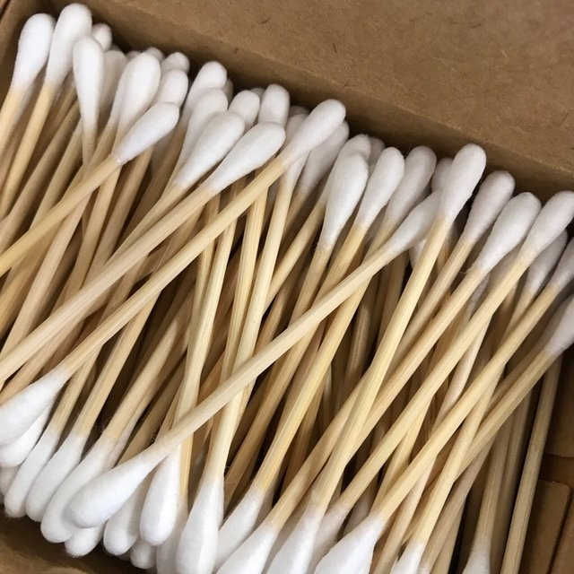

Hablar de cosmética sólida es hablar de cosmética “residuo cero”. Productos que podemos usar y reusar muchas veces, con el fin de generar menos basura o de generar alternativas biodegradables, que pueden volver a ser absorbidas por la naturaleza con un menor impacto ambiental. Descubre en este artículo algunos productos de higiene personal sin envases de plástico para ayudar al medioambiente!
Con la cosmética sólida se minimiza la producción de residuos en el baño, es el ¡Zero Waste! A menudo, los productos de higiene personal se envasan en exceso y suele hacerse en plásticos no reciclables. Algunas de las distintas propuestas de estos productos son:
Cuándo reducimos los residuos de los productos que usamos en el baño, los beneficios no son sólo para el planeta. Reducimos el impacto medioambiental pero también ganamos en salud, pues suelen ser productos más naturales, exentos de químicos y más duraderos. En definitiva, se trata de hacer un consumo más responsable, orientado hacia una cosmética más respetuosa con el medioambiente, donde los productos sean más naturales, veganos y ecológicos.
Piensa por un momento cuantos discos desmaquillantes podemos llegar a utilizar en un año. Unos cuantos, ¿verdad?. Ahora multiplica eso por todas las chicas que lo usan, centros de estética, peluquerías, etc….cada año son toneladas de residuo solo en un producto: Discos desmaquillantes. Con los discos desmaquillantes reutilizables de tela uno de las partes más repetitivas de tu rutina facial (desmaquillarte o aplicarte el tónico, por ejemplo) se habrá convertido en un proceso residuo cero. Son super suaves, por lo que son igualmente aptos para pieles sensibles. Se presentan en una cajita de madera que podrás reutilizar para guardarlos siempre en un lugar protegidos del polvo. Además, vienen con una bolsa de red ajustable para que puedas introducirlos en la lavadora. Nos parece una solución Zero Waste super eficaz ya que, con tan solo un cambio de hábito en un único producto, se está contribuyendo enormemente a reducir toda la cantidad de desperdicio que se genera anualmente con los discos desmaquillantes de algodón tradicionales.
 Este limpiador de oreja ecológico reemplaza los cotonetes tradicionales. El objetivo es reducir el desperdicio en el baño. Sus ventajas: ecológicas y económicas, por supuesto, pero también buenas la salud. A diferencia de los bastoncillos, evita la formación de tapones.
El desodorante vegano sin envase plástico contiene aceite esencial de palmarosa, cuya función es eliminar las bacterias. Por tanto, la sudoración no se evita, simplemente se hace perfectamente inodora, lo que es mucho mejor para el cuerpo. Es un desodorante 100% natural y de origen vegano, hecho a mano. Más efectivo que el aluminio y los desodorantes sin sales de aluminio.
Al contrario que sucede, por ejemplo, con un shampoo o un gel tradicional, los formatos sólidos no requieren de un envase de plástico, ni de conservantes antifúngicos y antibacterianos. Con la cosmética sólida, es posible hacer un “packaging” totalmente “plasticfree”, reciclable y reutilizable. Además, al no contener agua o contener una mínima cantidad, por lo general, son productos que no requieren de conservantes artificiales. Y, aunque en los shampoo sólidos, el envase es obligatorio para cumplir la normativa legal de informar al consumidor (composición INCI, modo de empleo y precauciones), puede tratarse de una caja fabricada con materiales biodegradables. En el caso de venta en tienda, en lugar de venta online, la normativa permite incluso vender el producto sin envase ni caja.
Esta tendencia -zero waste- está consiguiendo concientizar cada vez más a la industria y al público en general para cambiar nuestros hábitos hacia un consumo que genere menos residuos y en especial, enfocado a reducir el uso del plástico.